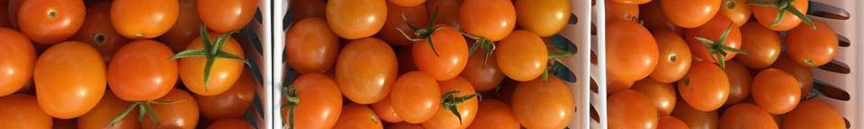

Field Trips and Guided Tours
A trip to Westgate Community Farm consists of a tour of the farm and hands-on activities, tasting and exploration. During the tour your group will explore the many aspects of urban farming including our chemical free/sustainable growing practices, composting and food access.
Our educational programming can be adapted for all ages and we can link activities to themes relevant to the group (i.e. urban/vacant land use, community service, nutrition, environmental stewardship, plant life cycles, pollination, environmental and food justice, sustainability, etc.) Groups are welcome to stay beyond the field trip to work on the farm and/ or have lunch in the shade garden. Teachers and parents are encouraged to utilize the space to lead activities and lessons.
Students over the age of 12 may stay to work on the farm with chaperones or teachers present. Students age 14+ are welcome to visit and work on the farm independently and receive volunteer credit for their time.
We ask students and chaperones to bring water and wear closed- toe shoes and clothes that can get dirty. A hat, sunblock and layers are advisable. On site we have a porta-potty, potable water, a hand washing station, a shade tent for cover from rain and sun and tables and chairs. Groups that visit the farm on Thursday afternoons and Saturday mornings can purchase vegetables from our on-site market stand.
Westgate Community Farm asks for a modest contribution to cover staff time providing this experience.
*Please note, public schools in the Westgate neighborhood are encouraged to schedule tours to the farm, free of charge.
* Elementary Students: $3- $5/student
* Middle School and High School Students: $4-$6/student
* Colleges, universities, and conference groups: $50- $80/group
* Companies: $100/group
To plan a field trip for your class, group, or organization, please email thegatefarm@gmail.com.
Volunteer
Join us at our urban farm to plant, harvest and care for our crops while learning about all aspects of a community- focused organic farm! We are open Tuesday- Saturday and host volunteers throughout the week as well as during our Saturday Community Workday. We welcome individual volunteers and
volunteer groups to join us in a variety of tasks on the farm from harvesting to planting to weeding, to beautification projects. We offer hands-on instruction and a Q and A with the farmers as well as opportunities for tasting and reflection. On site we have a port-potty, potable water, a shade structure, picnic tables, plentiful parking and gloves and tools. We can offer tastes of anything we have in season. We ask volunteers to wear close-toed shoes and bring hats, sunscreen, appropriate work clothing and a water bottle. We have produce for sale at our on-site market on Saturdays and Thursdays. We like to send volunteers home with some produce from the farm for volunteering as well. Look forward to working with you!
Workshops
Occasionally staff or community members lead hands-on workshops or children’s activities on the farm. These events are highlighted on our Facebook page. Interested in leading a workshop on health, wellness or the environment? Email thegatefarm@gmail.com.
Apprenticeship
The Westgate Community Farm offers a seasonal apprenticeship. The apprentice gains hands-on experience in organic farming, while helping to improve access to fresh produce in Westgate. This is an 8-month paid apprenticeship compensated at $150/ week for 15 hours of work per week.
Activities:
* Assisting with field work- planting, weeding, watering, seed starting
* Harvesting and washing produce
* Managing market stand- customer service, produce sales, inventory, clean up
* Building and maintaining farm infrastructure
Experience Gained:
* With a variety of farming/gardening skills
* Marketing fresh produce and basic business skills
* Working with youth, volunteers, and visitors from the West Palm Beach area
* Learning principles of food and community justice first hand
Please email thegatefarm@gmail.com to request an application.
